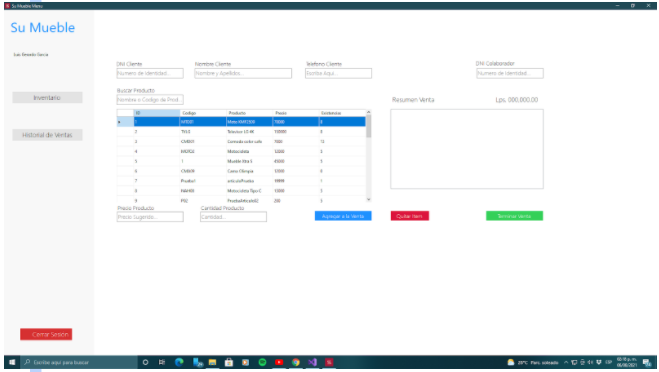

Ventas al Contado
Procedimiento para hacer las ventas al contado
Llenamos los campos con los datos del cliente, sin dejar ningún campo sin llenar porque al dejar uno se le exigirá que lo rellene datos exactos de cliente y de colaborador Luego… busca el producto ya sea por el código o le da click en el que requiera y se ubicará en la parte inferior el precio se verá reflejado y la cantidad del producto requerido sin poner la cantidad le pedirá que lo haga.. Pasa a Resumen Venta una vez hecho lo anterior y puede agregar varios productos y sus cantidades de esta forma con tal haya la cantidad en el inventario que se pide se podrá hacer la venta. Para quitar Ítem el botón Rojo inferior de la tabla de Resumen Venta así eliminamos un producto que no queramos o se haya puesto por error. Con botón Inferior verde terminamos la venta y nos dice la cantidad monetaria que hay que pagar y de esta manera finalizamos la venta ya sea que el cliente requiera nuevamente un producto volvemos iniciar el proceso antes mencionado.
ventas
ventas credito
inventario
Creditos
Pagos
colaboradores
historial ventas
clientes
Glosario de Términos
Menú Principal
Ventas: Sirve para poder ingresar al apartado de Ventas al contado y realizar la venta.
Ventas al Crédito: Sirve para poder ingresar al apartado de Ventas al Crédito y realizar la venta.
Inventario: Sirve para ingresar al apartado de actualizar el inventario del almacén o poder ingresar inventario nuevo.
Créditos: Sirve para hacer la búsqueda de una venta al crédito y poder pagar la cuota correspondiente.
Devoluciones: Sirve para ingresar productos que los clientes devuelven por motivos justificados, también le permite ver información general como de qué clase es la venta si al crédito o al contado, fecha para poder proceder a llenar los datos de la devolución.
Historial de Ventas: Sirve para poder visualizar el historial de las ventas realizadas por la empresa.
Colaboradores: Sirve para poder visualizar la cantidad de colaboradores que hay en la empresa y hacer ciertos cambios.
Cerrar Sesión: Sirve para cuando el colaborador o usuario que esté utilizando el sistema decida cerrar el programa.
Ventas
Agregar a la Venta: Con esto el colaborador puede realizar una venta al contado, solo seleccionando el Ítem o Producto que se va a vender.
Quitar Ítem: Este botón le permite al colaborador quitar un producto o Ítem que el cliente decida no llevar o que exista algún error en los productos seleccionados.
Terminar Venta: Con este botón el colaborador puede terminar la venta que se está haciendo, generando la factura.
Inventario
Actualizar: Con este botón el usuario puede cambiar las propiedades de un producto ya existente en inventario, como ser: Código, precio, categoría, nombre y existencias.
Nuevo: El colaborador puede ingresar nuevos productos y guardarlos con sus respectivas propiedades (Código, precio, categoría, nombre y existencias).
Crédito
Pagar Cuota: El colaborador puede ingresar los datos de la cuota que se va a pagar por un producto, estos datos son: Cantidad de la cuota, DNI del colaborador que realizó el cobro de la cuota, Producto, Fecha de Vencimiento, Cuotas Pendientes, Monto Pendiente.
Imprimir Factura: El colaborador imprime la factura una vez realizado el pago de la cuota.
Devoluciones
Agregar: Le permite al colaborador ingresar los datos de devolución, estos son: Código de Factura, Motivo de la Devolución, Producto, Cantidad y Observaciones del Estado del Producto.
Historial de Ventas
Hecho: Se guardan los datos ingresados de la devolución.
Ver Detalles: Permite al colaborador ver más a detalle los datos de una venta realizada.
Colaboradores:
Actualizar: Permite ver o cambiar los datos de algún colaborador, como: DNI, Nombre, RTN, Fecha de Nacimiento, Clave, Puesto, Correo, Telefono, Fecha de Contrato, Fecha de finalización y Dirección.
Nuevo: Permite ingresar un nuevo colaborador a la empresa tomando sus datos personales.
Terminar Contrato: Se usa cuando a un colaborador se le quitó o terminó el contrato, por los cual ya no será parte de la empresa.